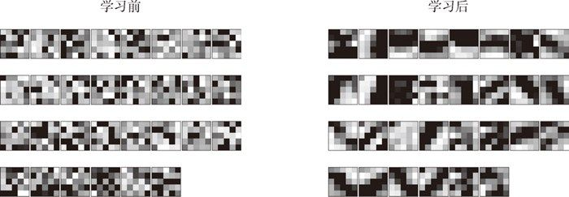
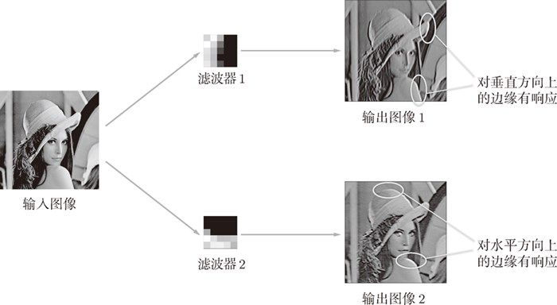
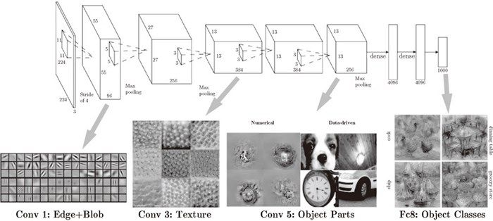

CNN 中用到的卷积层在“观察”什么呢？本节将通过卷积层的可视化，探索 CNN 中到底进行了什么处理。
刚才我们对 MNIST 数据集进行了简单的 CNN 学习。当时，第 1 层的卷积层的权重的形状是 (30, 1, 5, 5)，即 30 个大小为 5 × 5、通道为 1 的滤波器。滤波器大小是 5 × 5、通道数是 1，意味着滤波器可以可视化为 1 通道的灰度图像。现在，我们将卷积层（第 1 层）的滤波器显示为图像。这里，我们来比较一下学习前和学习后的权重，结果如图 7-24 所示（源代码在 ch07/visualize_filter.py 中）。
图 7-24 中，学习前的滤波器是随机进行初始化的，所以在黑白的浓淡上没有规律可循，但学习后的滤波器变成了有规律的图像。我们发现，通过学习，滤波器被更新成了有规律的滤波器，比如从白到黑渐变的滤波器、含有块状区域（称为 blob）的滤波器等。

图 7-24 学习前和学习后的第 1 层的卷积层的权重：虽然权重的元素是实数，但是在图像的显示上，统一将最小值显示为黑色（0），最大值显示为白色（255）
如果要问图 7-24 中右边的有规律的滤波器在“观察”什么，答案就是它在观察边缘（颜色变化的分界线）和斑块（局部的块状区域）等。比如，左半部分为白色、右半部分为黑色的滤波器的情况下，如图 7-25 所示，会对垂直方向上的边缘有响应。

图 7-25 对水平方向上和垂直方向上的边缘有响应的滤波器：输出图像 1 中，垂直方向的边缘上出现白色像素，输出图像 2 中，水平方向的边缘上出现很多白色像素
图 7-25 中显示了选择两个学习完的滤波器对输入图像进行卷积处理时的结果。我们发现“滤波器 1”对垂直方向上的边缘有响应，“滤波器 2”对水平方向上的边缘有响应。
由此可知，卷积层的滤波器会提取边缘或斑块等原始信息。而刚才实现的 CNN 会将这些原始信息传递给后面的层。
上面的结果是针对第 1 层的卷积层得出的。第 1 层的卷积层中提取了边缘或斑块等“低级”信息，那么在堆叠了多层的 CNN 中，各层中又会提取什么样的信息呢？根据深度学习的可视化相关的研究 [17][18]，随着层次加深，提取的信息（正确地讲，是反映强烈的神经元）也越来越抽象。
图 7-26 中展示了进行一般物体识别（车或狗等）的 8 层 CNN。这个网络结构的名称是下一节要介绍的 AlexNet。AlexNet 网络结构堆叠了多层卷积层和池化层，最后经过全连接层输出结果。图 7-26 的方块表示的是中间数据，对于这些中间数据，会连续应用卷积运算。

图 7-26 CNN 的卷积层中提取的信息。第 1 层的神经元对边缘或斑块有响应，第 3 层对纹理有响应，第 5 层对物体部件有响应，最后的全连接层对物体的类别（狗或车）有响应（图像引用自文献 [19]）
如图 7-26 所示，如果堆叠了多层卷积层，则随着层次加深，提取的信息也愈加复杂、抽象，这是深度学习中很有意思的一个地方。最开始的层对简单的边缘有响应，接下来的层对纹理有响应，再后面的层对更加复杂的物体部件有响应。也就是说，随着层次加深，神经元从简单的形状向“高级”信息变化。换句话说，就像我们理解东西的“含义”一样，响应的对象在逐渐变化。